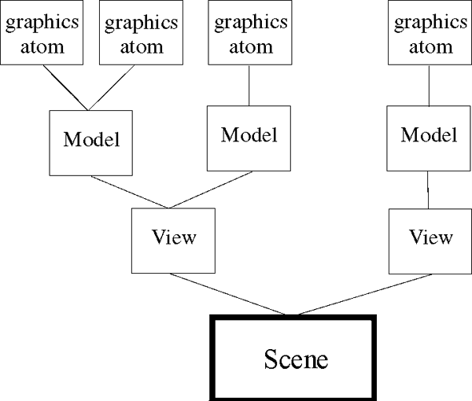

An Object Graphics display can be thought of as a group of graphics objects organized into a hierarchy or tree. For example, a graphics object tree with four graphics atoms (visualization objects) might be contained in three separate model objects, which are in turn contained in two distinct view objects, both of which are contained in one scene object, which is the root of the graphics tree.
|
 |
An object graphics display is commonly made up of the following components:
Destination objects — a window, printer, clipboard or memory buffer that contains the display. One of these objects is required for any graphics tree. For more information, see Destination Objects . In the tree analogy, one of these objects is the ground.
Display objects — a scene, view, or viewgroup that contains one or more models. Each model controls the spatial positioning of the visualization objects that it contains. See Display Objects .
IDL_Container , like a view, can act as a container for other objects. Adding objects to a container object allows you to group disparate IDL objects into single object, and allows you to easily move or destroy the objects within the container.
Visualization objects — these low-level objects (shown as graphic atoms in Figure ) are used to create visualizations such as plot, contour, surface, and image displays. These objects contain data and have attributes such as size, color, or associated color palette. Visualization objects do not have an independent transformation matrix and do not contain other objects. See Visualization Objects for more information.